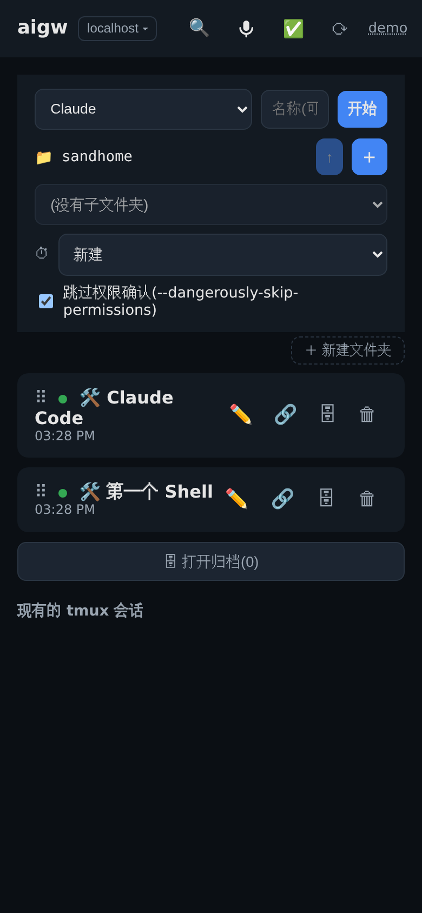
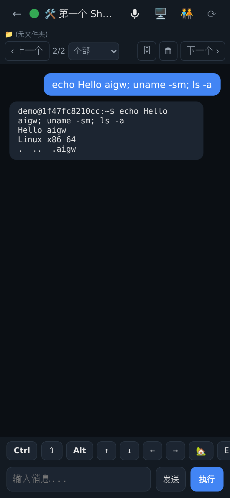
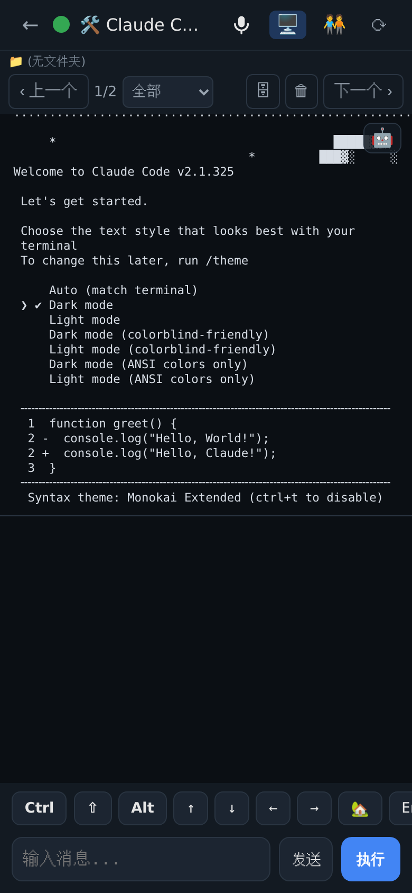

aigw 教程 用 Docker 试用
在自己的电脑（或自己管理的服务器）上，用一个 Docker 容器运行并试用 aigw 的步骤。不需要服务器管理员，大约 15 分钟就能在浏览器里用上 Shell 和 Claude Code 会话。
基础篇和进阶篇面向管理员搭建的正式服务器（用 Google 登录，每个用户有自己的容器）。这个演示是“在本地运行一人份 aigw”的临时构成，有些功能无法使用（第 8 章）。
1. 需要准备的东西
- Docker：Windows、Mac 用 Docker Desktop，Linux 用 Docker Engine。能运行
docker run hello-world就可以。 - git（用于获取仓库；下载 ZIP 也可以）。
- 浏览器：Chrome、Edge、Firefox。Safari 无法登录（第 4 章）。
- 约 3 GB 的磁盘空间（构建完成的含 Claude Code 的镜像约 940 MB，但构建过程中基础镜像和中间层也会占用空间）。
- 如果使用 Claude Code，需要 Claude 账号（Pro、Max 等套餐，或 API 密钥）。只用 Shell 则不需要。
2. 获取代码并构建镜像
git clone https://github.com/haselab-net/aigw.git
cd aigw
docker build -f docker/Dockerfile -t aigw-demo .需要几分钟（安装 Debian、Python、tmux 以及 Claude Code 的原生版本）。不需要 Claude Code 的话，用 docker build --build-arg WITH_CLAUDE=0 -f docker/Dockerfile -t aigw-demo . 可以构建得更小更快。
3. 启动
docker run -d --name aigw-demo -p 127.0.0.1:8878:8878 -v aigw-demo-home:/home/demo aigw-demo| 参数 | 含义 |
|---|---|
-d --name aigw-demo | 在后台运行，命名为 aigw-demo |
-p 127.0.0.1:8878:8878 | 只能从这台电脑上通过 8878 端口打开。请不要去掉 127.0.0.1:（去掉后，同一网络中的任何人都能进入演示） |
-v aigw-demo-home:/home/demo | 把演示用户的主目录（你的文件、Claude Code 的登录）放在 Docker 卷里，重建容器后也会保留 |
如果 8878 端口已被占用，把左边的数字改掉，例如 -p 127.0.0.1:18878:8878，下面的 URL 也改用这个端口。
ssh -L 8878:127.0.0.1:8878 <服务器> 连接后，在本地浏览器中打开。4. 打开并登录

- 在浏览器中打开
http://localhost:8878/agents/。 - 点击“Log in as the demo user”，就会显示会话列表。
demo），并能在容器中使用 Shell。请不要让不可信的人使用；在登录了演示的浏览器中，也不要一直开着不可信的网页。只有用 localhost 或 127.0.0.1 地址打开时才能登录。想用其他名字打开时，在 docker run 中加上 -e AIGW_DEMO_HOSTS=名字。
Safari 在这种形式（http 的 localhost）下不接受登录的 Cookie，登录后也进不了列表。请使用 Chrome、Edge 或 Firefox。
5. 使用 Shell 会话

- 在最上面的选择框中选“Shell(沙箱内)”，输入名字（可以留空），点击“开始”。
- 列表中会多出这个会话。点击名字即可打开。
列表中的 ✏️ 是改名，🔗 是与其他会话连接（会话连接，见进阶篇），🗄 是归档，🗑 是删除。会话在你停止之前会一直在容器中运行，关掉浏览器后也能接着看。

- 在下方的输入框中写命令，点击“执行”（带 Enter 发送）。“发送”只发送文字，不带 Enter。
- 你发送的内容显示在右边，终端的输出显示在左边，就像聊天一样。
- 输入框上方的 Ctrl、Alt、方向键等按钮，在手机上也能发送特殊按键（例如先按 Ctrl 再按 C）。
- 上方的 🖥️ 可以查看终端画面本身。
Shell 以 demo 身份在容器中运行，主目录是 /home/demo/sandhome（代替正式服务器上的“自己专属的容器”）。
6. 使用 Claude Code

- 在最上面的选择框中选“Claude”，点击“开始”。下面的 📁 一行可以选择工作文件夹（
sandhome之下）。 - 打开会话，用上方的 🖥️ 显示画面。仅第一次，Claude Code 会要求进行设置：
- 选择文字风格：用输入框上方的 ↑ ↓ 移动，在输入框为空时点“执行”确定。
- 选择登录方式后会显示一个 URL。在浏览器中打开它并登录，把显示的代码粘贴到输入框中，点“执行”。
- 之后只要在聊天中写下指令并点“执行”即可。Claude Code 会在
sandhome中创建文件、运行命令。
登录信息保存在 /home/demo 下，只要加了 -v aigw-demo-home:/home/demo，重建容器后也会保留。
勾选“跳过权限确认”时，Claude Code 执行命令前不会每次都询问。它只在容器中操作；取消勾选则每次都会询问。
界面说明、按键输入、聊天与终端画面的关系，基础篇的第 2、3、5、6 章同样适用。
7. 停止、删除与数据存放位置
| 想做的事 | 命令 |
|---|---|
| 停止 / 再次启动 | docker stop aigw-demo / docker start aigw-demo |
| 更新到新版本 | git pull 后，执行第 2 章的 docker build、docker rm -f aigw-demo、第 3 章的 docker run |
| 删除容器（保留数据） | docker rm -f aigw-demo |
| 连数据一起删除 | 在上面的基础上再执行 docker volume rm aigw-demo-home |
| 进入容器 | docker exec -it -u demo aigw-demo bash |
你创建的文件在 /home/demo/sandhome（卷 aigw-demo-home 中）。会话列表和记录也在 /home/demo 下，保留卷的话，下次启动时可以接着使用。重建容器后登录会失效，请再点一次“Log in as the demo user”。
8. 演示中不能做的事
| 功能 | 在演示中 |
|---|---|
| Google 登录、多个用户、自助注册 | 没有。只有一个用户 demo |
| “Shell(沙箱外,主机)”、root Shell、通行密钥 | 不能使用（没有安装通行密钥解锁的机制）。即使显示按钮也会失败 |
| Codex | 镜像中没有 |
| 通过 ssh 连接的其他机器、Windows 机器黑板 | 没有配置，不会显示 |
| 手机通知（Web Push） | 没有密钥，不会发送 |
| 共享 | 没有可共享的其他用户，实际上无法使用 |
| 按用户分隔的容器 | 没有。会话和后端在同一个容器中运行 |
与正式构成的差别汇总在 docker/README.md 中。